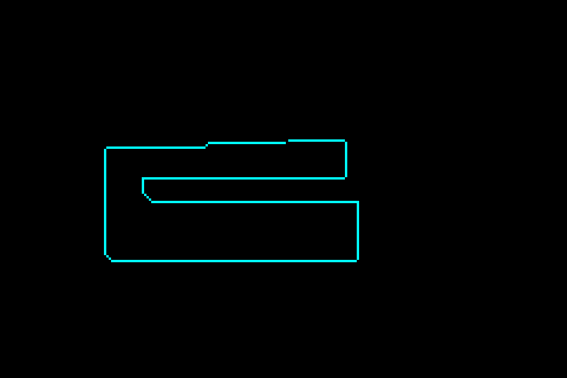

Introduction
meson-gba is a toolkit for developing Game Boy Advance homebrew using the Meson build system. It aims to make building homebrew much simpler and provides easy access to many different libraries and tools, making transitioning from the existing Makefile-based setups easy.
The project is currently in beta state, and while everything has been tested
to at least compile successfully, you might run into various problems. Bug
reports are highly appreciated! You can also reach out in the #sdk-seven
channel in the gbadev Discord if you need help.
The meson-gba repository is set up such that the main branch acts as the
project template. Download dependencies with meson subprojects download,
and modify game/meson.build to suit your projects.
Installation (Windows)
Before we can get started, there is a few things we need to install. Mainly, we need:
- The meson build system
- The git version control system
- A compiler for your machine
- A compiler for the GBA
- (optional) An emulator for running your game
Compiling software on Windows has always been notoriously difficult to set up due to every program kind of arbitrarily picking its own spot to hang out in, and it can be quite tricky to get all of them to talk to each other.
This is why we will use MSYS2, a software development platform for Windows that provides a simple, unix-like environment with a package manager that makes everything much easier.
However, this also means that we’ll be doing a lot of the setup in the terminal, or “command prompt”, that funny black window you can type do all sorts of arcane things with. Not to worry, we’ll walk you through everything you need to do, and later on you can integrate everything nicely into an IDE like VS Code todo
First, download the MSYS2 installer.
Note, if you’ve done GBA homebrew development before, you may already have a version of MSYS2 installed, using the devkitPro installer. If you wish to use this installation rather than a fresh one, read the chapter setting up devkitPro’s MSYS todo.
Once you have MSYS2 installed, you’ll want to open the MSYS UCRT64 shell from your start menu.
Important: unless specified otherwise, we will always use the UCRT64 shell. See Appendix: MSYS2 todo for why.
Note: “shell” is the term used for the program that runs inside a terminal and reads commands as input. Windows comes with two shells, cmd (Command Prompt) and Powershell. MSYS2 gives us the bash shell, which has many more features.
Once you open it, you should be greeted by a prompt that looks a little like this:
user@computer UCRT64 ~ $
Now, the first thing we’ll wanna do is make sure we can install packages, and update everything:
pacman -Syu
When it asks you if you want to proceed with the installation, press enter.
It will most likely say something like
:: To complete this update all MSYS2 processes including this terminal will be closed. Confirm to proceed [Y/n]
Press enter again, then open the UCRT64 shell.
Update the remaining packages with the following command:
pacman -Su
Now that we’re all up to date, we can install everything you need, using this slightly magical incantation (you can press Shift+Insert to paste into the MSYS2 terminal):
pacman -S ${MINGW_PACKAGE_PREFIX}-{meson,gcc,arm-none-eabi-toolchain,freeimage} git
When it asks you which members to install, just hit enter.
Once that’s done, run the following commands to verify everything is working:
meson --version
ninja --version
git --version
python3 --version
gcc --version
arm-none-eabi-gcc --version
If all of those commands run without problems, you’re good to go!
Project Setup
Now that we have everything ready to go, let’s set up meson-gba.
First, navigate your terminal to wherever you like to keep your programming projects.
Then, download meson-gba using git, if you haven’t already done so:
git clone https://github.com/LunarLambda/meson-gba
cd meson-gba
If you type ls -1, you should see the following files:
LICENSE.txt
README.md
book
examples
game
gba.ini
meson
meson.build
subprojects
The game directory is where you will place all your game’s code and files. The meson directory contains files needed for configuring the compiler, and the subprojects directory contains files for all the libraries and programs that meson-gba lets you use.
Finally, you can configure some project settings in meson.build, although this is optional, most of your build code will be in game.
Set up your build directory:
meson setup --cross-file=meson/gba.ini build
If everything goes well, you should see something like this at the end:
gba-meson 0.5.0
Subprojects
sdk-seven : YES
User defined options
Cross files: gba.ini
sdk-seven is the project that provides all the necessary bits for building GBA programs (or ROMs).
Now, you should be able to compile everything:
ninja -C build
If you look inside the build/game directory, you should now see a file called gba-meson-template.gba. Let’s try running it in an emulator:

Success!
Using Meson
Now that we have everything working, let’s take a look at how to use the meson build system. The game directory has a pre-written meson.build file, which you can use if you want to jump right in, but it’s pretty long, so for now, let’s start really simple, with a basic build file:
minrt = dependency('minrt')
elf = executable('guide-01', 'src/main.c',
include_directories: ['include'],
dependencies: [minrt],
name_suffix: 'elf')
makerom = find_program('makerom')
rom = custom_target('guide-01-rom',
input: elf,
output: 'guide-01.gba',
command: [makerom, '@INPUT@', '@OUTPUT@'],
build_by_default: true)
- We pull in dependencies (libraries that we want to use in our code) using the
dependency()function. - We build our program as an ELF file using the
executable()function. - We find external programs we want to use with
find_program(). - We use
custom_target()to add custom build steps (like turning our ELF into a GBA ROM).
Pretty straightforward, right?
Let’s add a library, to help us use the GBA’s hardware, libseven:
# NEW!
libseven = dependency('libseven')
minrt = dependency('minrt')
elf = executable('guide-01', 'src/main.c',
include_directories: ['include'],
dependencies: [minrt, libseven], # <- NEW!
name_suffix: 'elf')
makerom = find_program('makerom')
rom = custom_target('guide-01-rom',
input: elf,
output: 'guide-01.gba',
command: [makerom, '@INPUT@', '@OUTPUT@'],
build_by_default: true)
And write a basic program, that draws on the screen:
#include <seven/prelude.h>
#include <seven/hw/video.h>
#include <seven/hw/video/bg_bitmap.h>
#include <seven/hw/video/color_constants.h>
int main(void)
{
// To wait for V-Blank, we need some rudimentary interrupt handling
irqInitStub();
irqEnableFull(IRQ_VBLANK);
// Enable video mode 3, which lets us draw pixels directly to the screen
REG_DISPCNT = VIDEO_MODE(3) | VIDEO_BG2_ENABLE;
struct InputState input = inputNew();
int x = 120;
int y = 60;
// Our main game loop runs forever
while (true)
{
// Process inputs
input = inputPoll(input);
x += inputAxisX(input);
y += inputAxisY(input);
// Make sure x and y stay on the screen (240x160 pixels)
if (x < 0) x = 0;
if (x >= 240) x = 239;
if (y < 0) y = 0;
if (y >= 160) y = 159;
// Wait for V-Blank so we can draw to the screen without tearing
biosVBlankIntrWait();
// Draw a pixel to the screen
MODE3_FRAME[y][x] = COLOR_CYAN;
}
}
And if we run it… hey!
